Denkers
in Tuinen
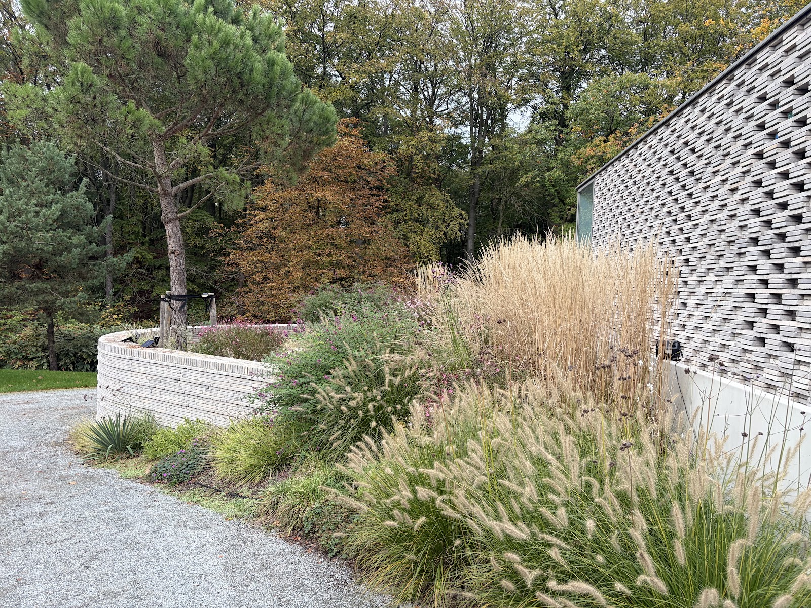
Monique en Pierre ontwerpen tuinen vanuit Apeldoorn. Van betegelde stadstuin tot perceel in het bos: zij maken van uw losse ideeën een plan met rust, zichtlijnen en beplanting die het hele jaar iets laat zien.
Werk
Grassen die meebewegen, paarse salvia tegen een rieten kap, een terras dat op het water ligt. Elke tuin hieronder begon met een gesprek over hoe de bewoners er willen leven.
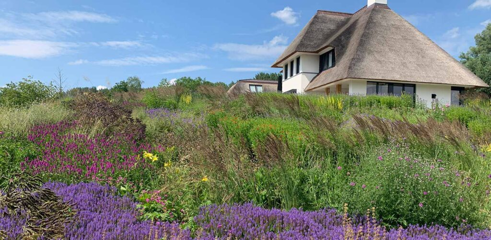
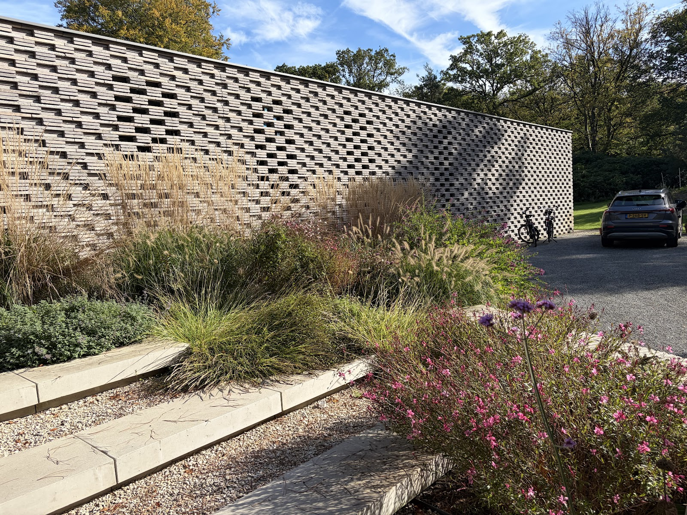
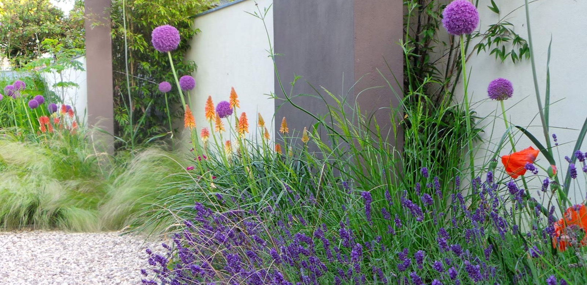
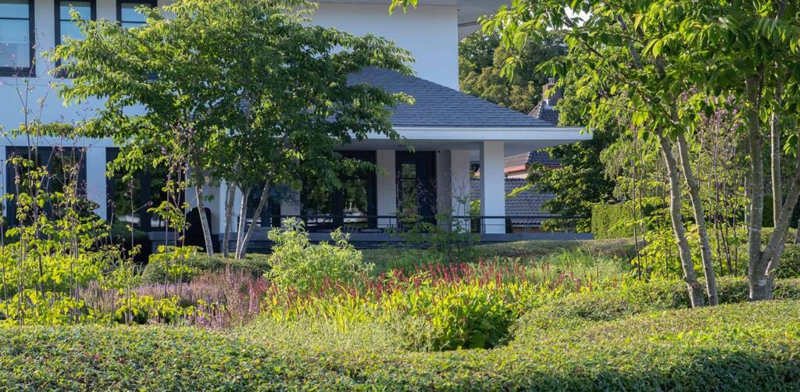
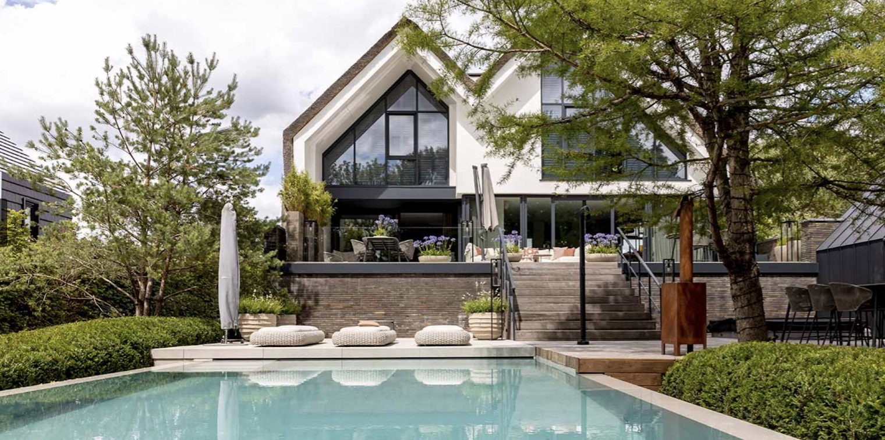
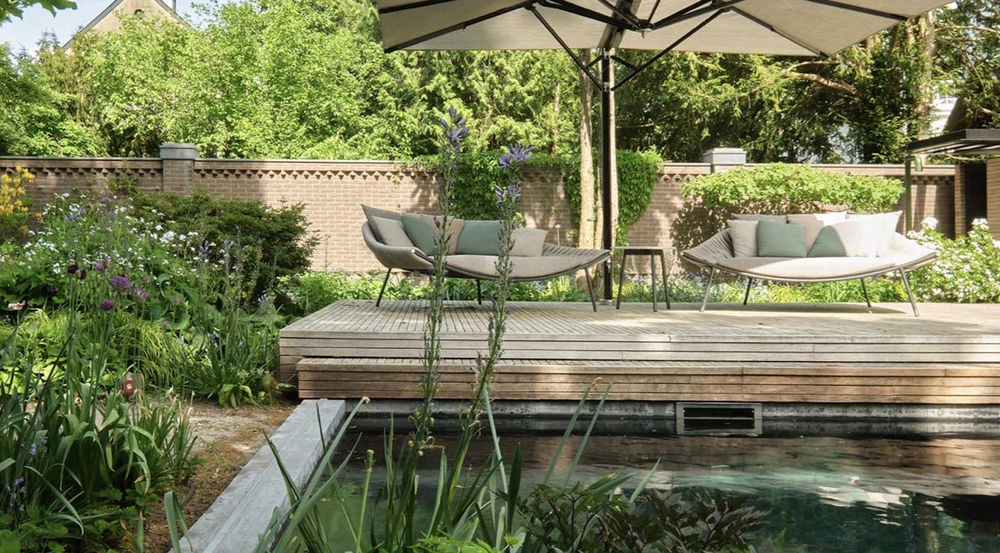
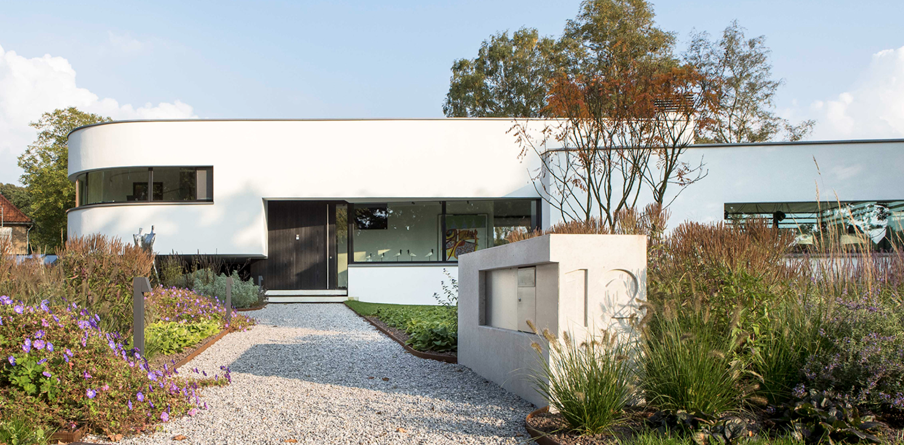
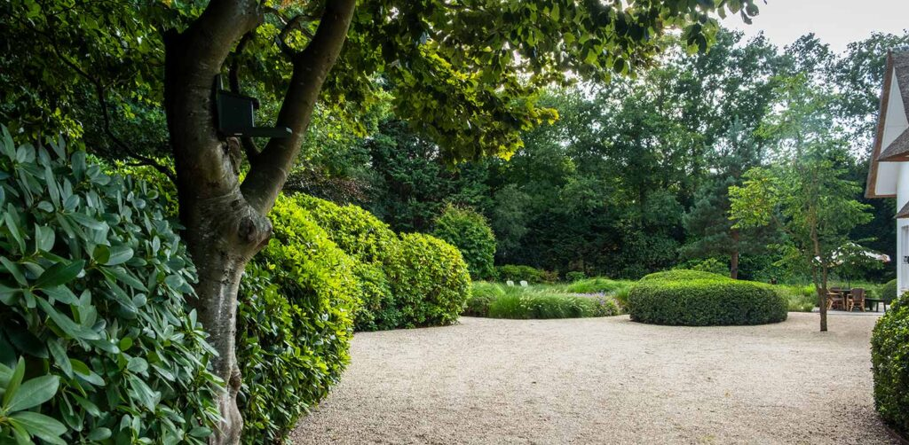
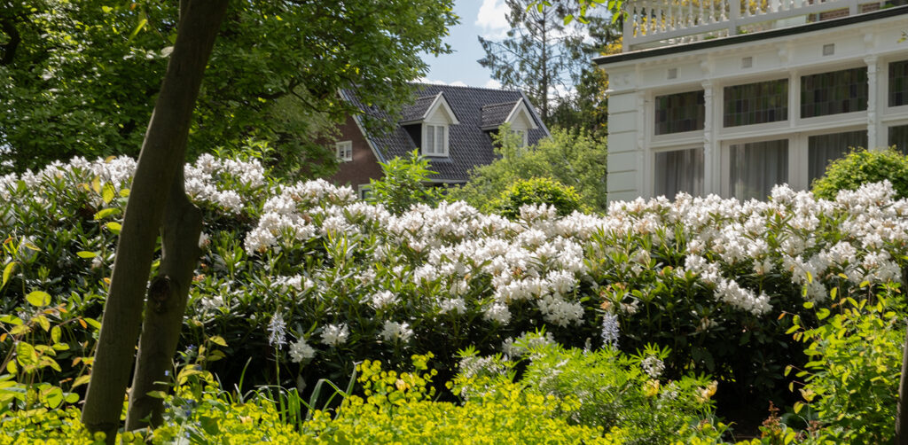
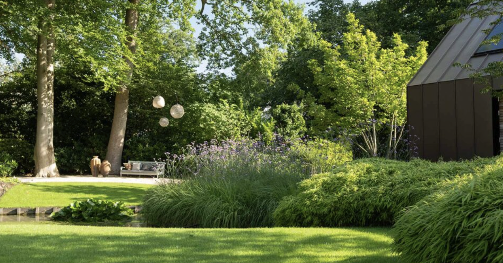
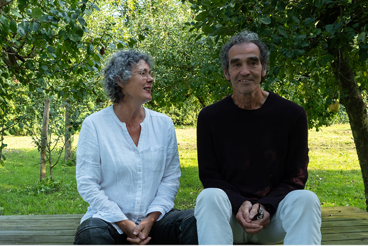
Monique en Pierre
Achter Denkers in Tuinen zitten twee mensen. U spreekt ze zelf, vanaf het eerste gesprek tot de tuin er ligt.
Ze luisteren naar wat u in uw hoofd heeft, ook als dat nog vaag is. Daarna kijken ze naar het huis, de plek en hoe u buiten wilt leven: meer groen, schaduw, water voor de vogels, een plek om te zitten of een schommel voor de kleinkinderen.
Wat daaruit komt is een compleet ontwerp met een duidelijke indeling, sterke zichtlijnen en beplanting die bij de plek past. Klanten noemen dat proces zelf organisch en natuurlijk.
Wat klanten zeggen
5,0 op Google, uit 17 reviews
"Toppers in tuinen ! Pierre en Monique hebben een zeer krachtig ontwerp neergezet en samen met Hoveniersbedrijf Weultjes een prachtige stadstuin gerealiseerd. Al mijn vage initiële ideeën zijn uitgewerkt en geperfectioneerd tot een prachtige groene buitenruimte. In der Beschränkung zeigt sich erst der Meister !"
"Monique en Pierre hebben vorig jaar een fantastische tuin voor ons ontworpen. Wij zijn heel blij met het resultaat en genieten er iedere dag van. Ze hebben precies begrepen wat wij in ons hoofd hadden en de samenwerking gedurende het hele project was heel prettig."
"De voor- en achtertuin waren nog het ontwerp van de vorige bewoners. Veel tegels, de nodige klinkers, weinig beplanting: een klassieke betegelde stadstuin. Na 15 jaar waren wij toe aan een andere tuin. Veel groener, koeler, aantrekkelijk voor insecten, met water (voor de vogels) en een schommel (voor de kleinkinderen)."
"Na het zien van meerdere tuinen van Pierre en Monique waren we meteen onder de indruk van hun stijl, zichtlijnen en oog voor detail. In 2020 ontwierpen zij een compleet plan voor onze tuin, samen met hovenier Weultjes aangelegd. Vanaf dag één klopte het: de indeling, de beplanting en de sfeer. ..."
"Voor ons perceel in de bossen van Lage Vuursche zijn wij met Monique en Pierre plannen aan het smeden. Dit proces verloopt heel organisch en natuurlijk. Monique en Pierre werken onze gedachtes uit en komen met hele inspirerende en verrassende oplossingen voor de ruimtes om ons (in aanbouw zijnde) huis. ..."
Vertel ons over uw tuin
Bel of mail voor een eerste gesprek. Een paar foto's van de huidige tuin helpen al veel.
055 576 2319 info@denkersintuinen.nl- Adres
- Hoogakkerlaan 62
7314 EM Apeldoorn - Bereikbaar
- Maandag tot en met vrijdag
9.00 tot 18.00 uur